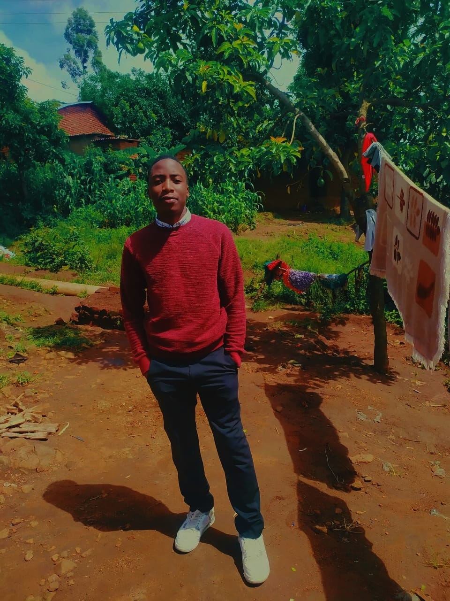
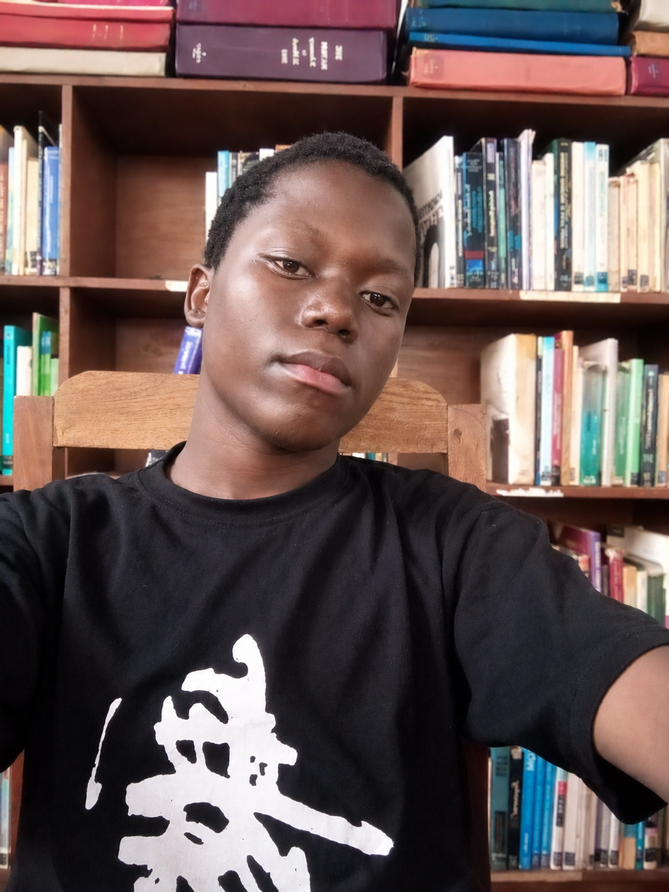

Understand the goal
Start with the business, its customers and the problem the digital solution should solve.
We are a Malawi-based web development company helping businesses and organisations build a clear, professional and useful presence online. Our work combines practical technology, purposeful design and direct communication.
Explore what we do ↗Golden-Rhys Company works with businesses, organisations and individuals to turn ideas into useful digital experiences. We create business websites, product catalogues, booking and enquiry websites, and custom web solutions.
We begin by understanding what a client needs, agree on a realistic scope and budget, then design, build, test and prepare the solution for launch. We aim to keep communication clear at every stage.
Start with the business, its customers and the problem the digital solution should solve.
Choose useful features and thoughtful design rather than adding complexity without a reason.
Agree on scope, test carefully and provide guidance for the handover and next steps.
Golden-Rhys Company brings together business direction and technical delivery to create practical digital solutions.

FOUNDING VISION · GOLDEN-RHYSDen Michael founded Golden-Rhys Company and leads its vision and direction. He guides the company's development and its commitment to helping businesses strengthen their digital presence.

DESIGN · DEVELOPMENT · TECHNOLOGYLeon leads the technical side of Golden-Rhys website projects, from planning and development to testing, deployment and ongoing technical management. He builds modern, responsive websites and practical digital experiences shaped around each client's needs.
Working alongside the company's founder, Den Michael, he turns business requirements into clear, reliable web solutions.
View Leon's professional profile ↗Tell us what your business needs. We'll discuss the right scope, features and next steps.